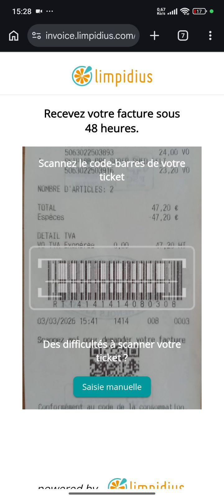
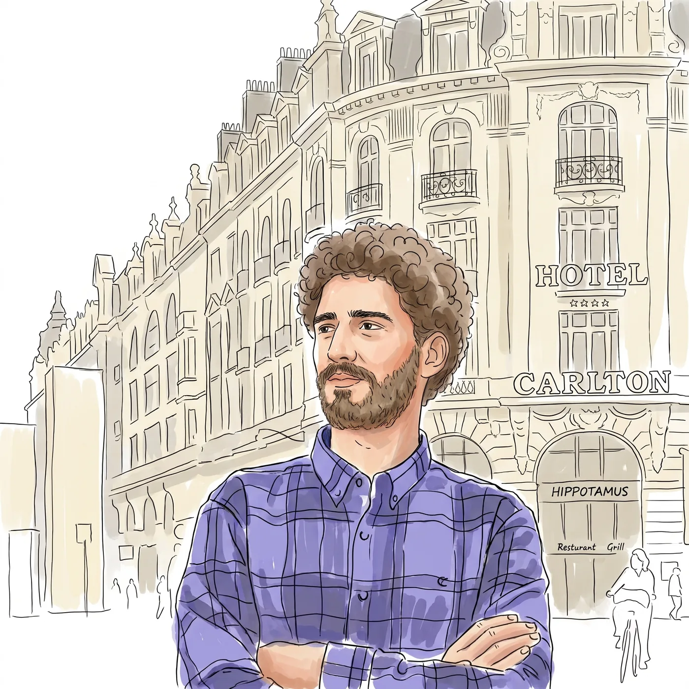
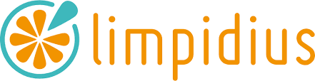
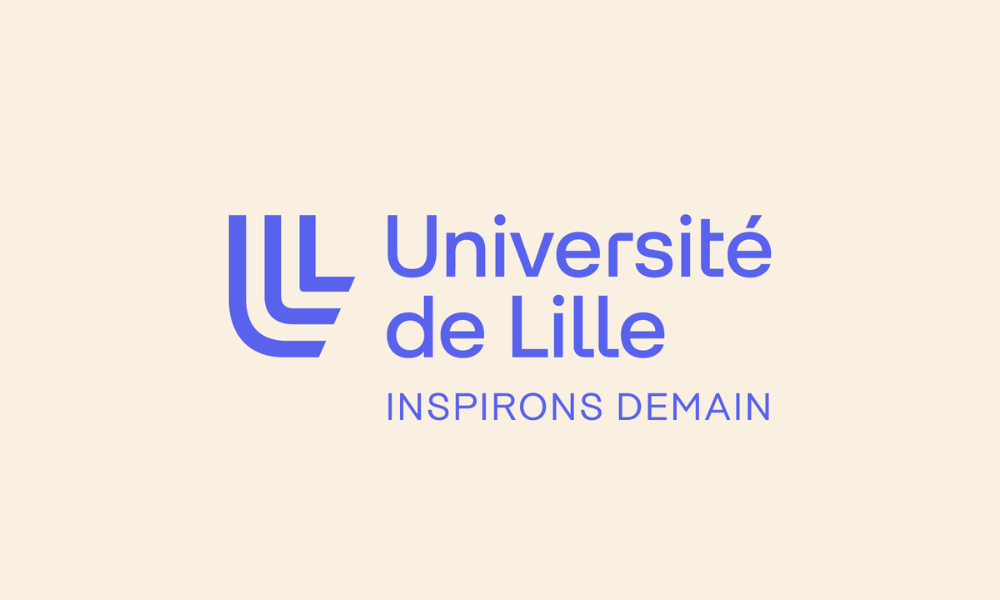

Two calls I made for you, easy to reverse: fully achromatic — the only "accent" is white at full strength, used for the active nav item, the current role, and the outcome statement; and the serif is limited to the display line, page titles, and single large numerals, so it stays a voice rather than a texture. Copy is verbatim from your site. Where imagery belongs, there is a labelled placeholder.
An engineering cycle in AI and Data Science at ESTIN, a stage spent shipping production code at Limpidius, and a Master's in Artificial Intelligence at Université de Lille from this September.
Production browser based 1D and 2D barcode scanner. An Angular library using WebGL for GPU image processing, ZBar via WebAssembly, and a multi stage pipeline with region of interest localization. Running at Castorama.
Read the case study
Engineering student, production developer, and the path between the two.
I am a Master's student in Artificial Intelligence at Université de Lille, with an engineering background in AI and Data Science from ESTIN in Algeria. Most of what I enjoy sits where machine learning meets software that real people actually use.
I recently finished a four month development internship at Limpidius, based at EuraTechnologies in Lille. I shipped a browser based barcode scanning library that runs in production at Castorama and other retail clients, handling roughly 3,000 scans a day. Getting GPU image processing and a WASM decoder to cooperate inside a browser tab taught me more about performance than any course did.
I move across the stack comfortably: frontend in Angular and React, backend in NestJS and Spring Boot, mobile in Kotlin, and ML pipelines in Python. I am currently looking for an alternance starting September 2026 in AI, Data Science, or software engineering around Lille.
Download CV (PDF)
Three roles, from a bus fleet system in Béjaïa to a scanner running in French retail.

Limpidius — EuraTechnologies, LilleFrom a scanner running in French retail to a deep learning timetable planner.
Production browser based 1D and 2D barcode scanner. An Angular library using WebGL for GPU image processing, ZBar via WebAssembly, and a multi stage pipeline with region of interest localization. Running at Castorama.
Case studyAutomatic timetable generation for a university, framed as sequential decision making under hard constraints. A PyTorch policy places one assignment at a time, masked to only the moves the constraints allow, so every schedule it builds is valid by construction. Reinforcement learning then tunes that policy against the quality of the whole timetable rather than any single slot.
Open source Android library published on JitPack for previewing Google Drive files natively, without handing users off to an external app.
At Limpidius, I replaced a paid browser scanning SDK with an in-house Angular library for retail teams using ordinary phones in stores and warehouses.
The library runs in an ordinary browser tab on store phones — no native install, no dedicated hardware. Camera capture stays on the main thread; decoding happens in a worker.
The browser captures camera frames on the main thread and transfers them to a Web Worker. WebGL handles preprocessing, while ZBar and region-of-interest detection run through WebAssembly. Sharpness gating rejects poor frames early, and a result is confirmed across multiple frames before it reaches the host application.
Android worked. iOS did not. Safari exposed camera dimensions in a different orientation from the pixels arriving in the worker, so the scanner was cropping the wrong part of the frame. I traced the display, corrected-frame, and raw-sensor coordinate spaces, then fixed the crop mapping and delayed startup until the host container had real dimensions.
Once the scanner was live, I built the telemetry path behind it: validated session data moved from the browser to a NestJS service, BigQuery, and Grafana. The resulting dashboard gave the team visibility into success rates, device failures, scan duration, and manual-entry recovery instead of relying on anecdotes.
The library replaced the commercial dependency and shipped to production across retail tenants. The work combined performance engineering, device-level debugging, and the judgment to measure whether the system was actually helping users.
From ESTIN in Algeria to a Master's in Artificial Intelligence at Université de Lille.
Four year engineering programme with a specialization in Artificial Intelligence and Data Science.
Graduate coursework in machine learning, deep learning, and large scale data processing.

Université de Lille — Lille, FranceFrench diploma validation pathway, completed alongside adapting to a new academic system and language.
Starting this September. I am looking for an alternance to run alongside it.
The languages, frameworks, and infrastructure I actually reach for.
Looking for an alternance from September 2026, in and around Lille.
Try next: "mobile versions of these" · "add the ⌘K palette and the AI chat entry point in this language" · "make the contact form the whole page"